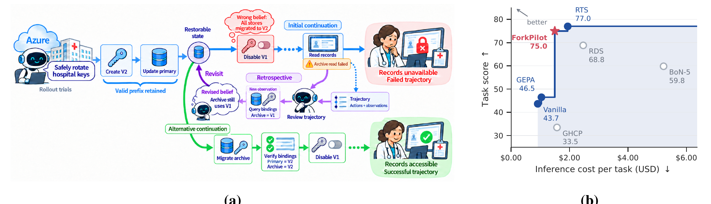
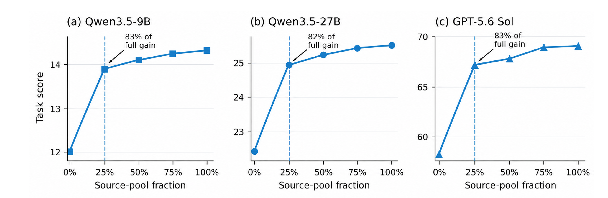

长程智能体任务要连续调用几十次工具，前面一步判断错了，后面的步骤会在错误的前提上继续做下去。回溯搜索的补救办法是：任务失败后回看整条轨迹，找一个可以恢复的早期状态，保留它之前正确的动作，从那里分叉出新的执行。问题在于这种搜索很贵，而且什么时候分叉、分叉几次、在哪条轨迹上继续搜，都很难事先定好。在 GPT-5.6 Sol 和 AutomationBench 上，只跑一次智能体得 43.7 分，完整的回溯树搜索 RTS 能拿到 77.0 分，但每个任务的推理成本也明显更高。微软和弗吉尼亚理工的 ForkPilot 学一个分配策略，在每个可以分叉的时刻预测“这次分叉多带来的得分减去多花的 token 成本”是否大于零，大于零才分叉。在 6 个基准、4 个开源模型上，它和 RTS 相比原始 token 平均少 36.2%，任务分平均高 0.23 分。它改的只是多花多少算力去回溯，智能体本身每一步怎么行动并不改，所以可以套在现有的智能体外面用。
下文先讲回溯搜索为什么难分配，再讲 ForkPilot 两个阶段各做什么，然后是三组主实验和两个检查实验。
1. 问题：分叉值不值，要等任务结束才知道

左图是一个回溯搜索的例子：智能体轮换医院系统密钥时误以为所有存储都已迁到新密钥，停用旧密钥后读档失败；回溯时它查询密钥绑定，发现归档仍用旧密钥，于是从更早的状态分叉，先迁移归档再停用旧密钥。右图是 GPT-5.6 Sol 在 AutomationBench 上的得分和每任务推理成本：ForkPilot（红星）得分 75.0，接近 RTS 的 77.0，但成本更低，位于帕累托前沿上（论文 Figure 1）。
回溯搜索在长程任务里有两个具体困难，作者分别起了名字。
第一个是归因困难。一次分叉的效果要等后面的工具调用全部跑完、拿到最终奖励才看得到，而最终奖励同时受这次分叉和之后每一步动作的影响。同一个状态下做同一种分叉，因为采样随机性和环境反馈不同，最终得分的差别会有很大波动。想估准一次分叉的平均价值，就需要很多对已经跑完的样本。
第二个是适应困难。新的观察和搜索结果会改变当前状态，线上环境本身也会变化。上一批任务里学到的“这种情况下分叉划算”，到了新任务可能已经不成立。
作者把要估计的量写成一个成对比较。在第 t 个决策点，候选分配方案 u 指定分叉数量和每条分支最多跑多深，u0 表示不分叉、继续当前执行。从同一个恢复出来的状态出发，分别按 u 和 u0 跑到任务结束：
Gt(u)=E[R(x,τtu)−R(x,τt0)−λ(C(τtu)−C(τt0))zt]
其中 R 是任务奖励（0 到 1），C 是 token 成本，包括没被选中的分支的生成和评估开销，λ 是成本的换算系数，zt 是控制器在当时能看到的信息摘要：已发生的动作和观察、已经探索过的分支和结果、剩余预算。直觉上，Gt(u)>0 表示这次分叉多拿的分数超过了多花的成本。作者把这套刻画叫作搜索价值动态（SVD）。论文还给了一个界，说明拿旧任务上拟合的估计去用在新状态上，误差来自三部分：样本太少的抽样误差、输入状态变了、奖励分布本身变了。作者明确说这个界只用来解释两个困难为什么存在，不为部署的控制器提供保证。
2. 方法：离线学打分，线上按下界决定
ForkPilot 分两个阶段。第一阶段在任务之间更新参数，第二阶段在单个任务内部做决策、参数不变。
第一阶段：从跑完的轨迹里造标签。 在一个可以分叉的源任务状态上，同时跑“按 u 分叉”和“不分叉”两条执行到结束，得到得分差 Y~ 和归一化的成本差 D~。每一对只给被选中的那个方案打标签，不需要人工标注“这里应该分叉几次”。模型结构是一个编码器把 zt 编成向量，后面接 M 个用任务自助采样训练的预测头，每个头输入向量和候选方案，输出预测的得分差和成本差。多个头取平均得到净值估计 G^t(u)。
只有点估计还不够，因为第 1 节说的两个困难会让估计不准。ForkPilot 另外训练一个误差模型，预测净值估计误差的上分位数 β^t(u)，输入包括多个预测头之间的分歧程度、当前状态和训练数据的接近程度，以及留出样本上的残差，并在另一份源数据上做校准。由此得到下界 Lt(u)=G^t(u)−β^t(u) 和上界 Ut(u)=G^t(u)+β^t(u)。作者强调这两个值只是决策分数，不是覆盖率保证。
第二阶段：任务内的闭环决策。 每到一个可以分叉的时刻，控制器用当前的 zt 给所有候选方案打分，规则有三档：
- 如果有方案的下界大于零，选下界最大的那个分叉。
- 如果所有下界都不大于零，但某个“小规模试探”方案的上界大于零，就在这些试探方案里选预测成本差最小的。试探方案的分叉数和深度上限事先设定，比系统允许的上限更严。
- 其他情况跳过本轮，继续当前执行。
第二档的作用是在不确定但可能有收益时花小钱试一下，试探跑出的新观察会更新 zt，下一次决策就有更多信息。任务结束后，这个任务的决策、分支、结果和成本加入经验池，第一阶段在扩大后的池子上重新拟合参数，这就是标题里的“自我进化”。
举一个示意的例子（数字为示意）：某个时刻候选方案“分叉 2 条、每条最多 5 步”的预测净值是 0.06，误差上分位数是 0.10，下界为负、上界为正；“分叉 1 条、最多 2 步”的试探方案上界为正，预测成本最低。控制器会选这个试探方案，而不是直接放弃，也不会直接跑大规模搜索。
3. 核心贡献
- 把长程任务里的回溯搜索写成一个按“得分差减成本差”定义的分配问题，并把难点拆成归因和适应两类。
- 用成对重放自动造标签训练分配策略，不需要人工标注最优分配，部署时也不需要每一步都做成对重放。
- 用下界、试探和跳过三档规则处理估计不确定性，并在每个任务结束后用新轨迹更新参数。
4. 实验
实验比较 9 个基线，分三类：测试时搜索（BoN-5，即采样 5 次取最好；完整回溯树搜索 RTS；回溯深度搜索 RDS，只在第一条轨迹的最后一个可恢复节点上继续）、基于经验的方法（ACE、ReasoningBank、Reflexion、GEPA、Trace2Skill，用过去的轨迹生成反思、记忆或技能）、以及 GitHub Copilot 的智能体框架 GHCP。6 个基准覆盖工作流自动化（AutomationBench）、工具与用户交互（τ³-Bench）、软件工程（SWE-bench Verified）、多模态工具使用（MM-ToolSandbox）、网页操作（WorkArena++）和综合交互任务（VitaBench）。指标是任务得分 S（0–100），以及相对 RTS 的原始 token 比例 R 和未命中缓存的 token 比例 U，R、U 越低越省。
实验一：不同基准上能不能稳定省 token。 做法是在 4 个开源模型（DeepSeek-V4-Flash、Kimi-K3、DeepSeek-R1-671B、Qwen3.8-27B）上，把 ForkPilot 和全部基线在 6 个基准上逐一比较。结果是相对 RTS，原始 token 平均少 36.2%，未命中缓存的 token 平均少 30.3%，任务分平均高 0.23 分；各基准上原始 token 节省从 SWE-bench 的 31.8% 到 AutomationBench 的 39.8%。下表摘取 Qwen3.8-27B 的三个基准：
| 方法 | AutomationBench S / R | τ³-Bench S / R | SWE-bench S / R |
|---|
| BoN-5 | 18.0 / 1.07 | 66.4 / 1.13 | 49.2 / 1.10 |
| RTS | 30.5 / 1.00 | 73.8 / 1.00 | 57.6 / 1.00 |
| ACE | 27.8 / 0.56 | 74.2 / 0.50 | 53.8 / 0.59 |
| GEPA | 29.0 / 0.59 | 75.1 / 0.52 | 56.0 / 0.64 |
| Trace2Skill | 28.2 / 0.54 | 73.4 / 0.55 | 55.2 / 0.61 |
| ForkPilot | 31.0 / 0.58 | 74.4 / 0.61 | 58.0 / 0.65 |
这张表能看出一个规律：ACE、GEPA 这类经验方法的 token 比例有时比 ForkPilot 更低，但得分普遍低于 RTS；ForkPilot 的得分和 RTS 持平或略高。它省下的是 RTS 里不划算的那部分搜索，所以得分没有跟着掉。
实验二：模型规模变化时收益是否还在。 做法是在 Qwen3.5 的 4B、9B、27B 和 122B-A10B 四个规模上重复实验。结果是原始 token 节省从 4B 的 28.5% 升到 9B 的 33.7%、27B 的 37.0%，122B-A10B 上是 35.8%；四个规模上相对 RTS 的得分变化分别是 +0.27、+0.27、+0.30 和 +0.23 分。作者的解读是收益在最大规模上趋于饱和。
实验三：换成闭源前沿模型、放进生产系统还能不能省。 做法是在一个生产智能体系统里用 GPT-5.6 Sol 和 Claude Opus 4.8，推理平台带缓存，测 AutomationBench 和 τ³-Bench 两个基准。
| 方法 | Sol Automation S / R / U | Sol τ³ S / R / U | Opus Automation S / R / U | Opus τ³ S / R / U |
|---|
| BoN-5 | 59.83 / 2.030 / 1.689 | 59.28 / 0.989 / 1.138 | 55.17 / 1.491 / 1.025 | 44.44 / 1.137 / 2.743 |
| RDS | 68.83 / 1.632 / 0.697 | 55.67 / 2.783 / 0.775 | 62.50 / 3.188 / 1.192 | 29.90 / 1.685 / 0.454 |
| GHCP | 33.50 / 0.846 / 0.481 | 43.30 / 0.208 / 0.186 | 39.83 / 0.487 / 0.189 | 41.24 / 0.171 / 0.251 |
| RTS | 71.83 / 1.000 / 1.000 | 67.53 / 1.000 / 1.000 | 70.83 / 1.000 / 1.000 | 44.67 / 1.000 / 1.000 |
| ForkPilot | 69.00 / 0.764 / 0.556 | 64.43 / 0.588 / 0.408 | 66.67 / 0.778 / 0.763 | 48.31 / 0.611 / 0.569 |
结果是 ForkPilot 用了 RTS 58.8–77.8% 的原始 token 和 40.8–76.3% 的未命中缓存 token，摘要里“最多省 59.2%”指的就是这里未命中缓存 token 的节省。这里要看清楚得分：在 Sol 的两个基准和 Opus 的 AutomationBench 上，ForkPilot 都低于 RTS（69.00 对 71.83、64.43 对 67.53、66.67 对 70.83），只有 Opus 的 τ³-Bench 更高（48.31 对 44.67）。所以在闭源模型上，它是用一部分得分换成本。和 RDS 相比，ForkPilot 四个设置得分都更高，原始成本低 53.1–78.9%，说明收益来自挑对在哪里分叉，单纯沿一条轨迹往深处搜做不到。
检查一：是不是评测反馈泄露带来的提升。 回溯时给智能体的提示里含有评测器反馈，作者担心模型借此“偷看答案”。做法是把反馈去掉，只保留执行历史（masked），或者把反馈在任务之间打乱（shuffled）。结果是 Qwen3.5-9B 在 AutomationBench 上原始 14.5、去掉反馈 14.4、打乱 13.0；Qwen3.5-27B 分别是 25.6、25.5、23.2。去掉反馈几乎不影响得分，说明提升并非来自反馈里的答案线索。
检查二：需要多少经验才能学好。 做法是在 AutomationBench 上只用一部分训练数据学策略，计算拿回了全量训练时多少比例的提升。

三个模型在 AutomationBench 上的任务得分随训练数据比例的变化：横轴是用于学策略的训练集比例，虚线标在 25% 处，三个模型在这里已经拿回全量提升的 82%–83%，之后曲线变平（论文 Figure 2）。
结果是只用 25% 的训练集（占全部数据的 13.3%）就拿回了全量提升的 81–85%，剩下 75% 的数据只再贡献 15–19%。
5. 局限
作者自己说明，理论界只解释归因和适应两个困难，不为学到的误差估计或部署的控制器提供保证；误差上下界也只是决策分数。补充两点事实：第一，方法要求宿主系统能恢复早期环境状态，不能回滚的真实操作（比如已经发出的请求）用不上分叉；第二，闭源模型上 4 个设置中有 3 个得分低于 RTS，省 token 是以少量得分为代价的。
6. 实践意义
- 如果你的智能体已经在用重试或树搜索，ForkPilot 的做法可以直接借鉴：把每次额外搜索的“得分差减成本差”记下来当训练标签，学一个是否继续搜索的打分器，智能体本身不用重训。
- 三档决策规则（下界为正才大搜、上界为正先小试、否则跳过）可以单独拿来用，适合算力预算固定、又不想错过可能有收益的搜索的场景。